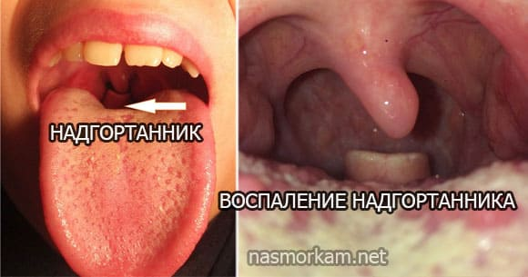
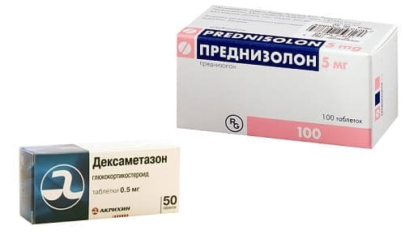

ЭПИГЛОТТИТ – РЕДКО, НО СЕРЬЕЗНО
Главное, с чем мы должны бояться спутать ложный круп – это эпиглоттит, гнойное воспаление надгортанника. Внешние проявления ложного крупа и эпиглоттита могут быть очень похожи: та же осиплость голоса, тот же грубый кашель, то же затруднение дыхания. Но эпиглоттит несравнимо более опасное заболевание, вызываемое уже не вирусной, а бактериальной инфекцией; в 9 из 10 случаев его причиной является ХИБ-инфекция.

Эпиглоттит клинически очень похож на ларинготрахеит (ложный круп, стеноз гортани), часто практически неотличим. Родителям не нужно запоминать симптомы эпиглоттита, это довольно редкое заболевание и оно довольно трудно в диагностике, так что это забота врача, а не ваша. Сами вы вряд ли поставите этот диагноз, только спровоцируете у себя паранойю. Вам достаточно знать, что такое заболевание бывает, и что как при гастроэнтерите мы боимся пропустить острый живот, так и при стенозе гортани боимся пропустить эпиглоттит.
Однажды мне попалась в ленте очередная статья о гибели ребенка «по вине» врачей: у ребенка начались кашель, осиплость голоса, затрудненное дыхание, и от нарастающей одышки он погиб. Всё как всегда: родители винят врачей, журналисты нагнетают трагичности и травят всех собак на медиков, защитники прав пациентов рассказывают, как все плохо в нашей медицине… Не в моей компетенции рассуждать о деталях того случая, я сейчас о другом.
То, что описывает мать, очень напоминает клиническую картину эпиглоттита. Именно так дети и погибают при воспалении надгортанника. Вообще, если вы захотите потрепать себе нервы и введете в гугле «смерть ребенок эпиглоттит», вы ужаснетесь, как много таких трагедий.
Обычный вирусный круп быстро проходит от введения глюкокортикостероида, а эпиглоттит не отвечает на «гормоны» никак, поэтому если введение этих лекарств не принесло быстрого облегчения – лучше перестраховаться, показать ребенка врачу и убедиться, что это всего лишь упорный круп, а не эпиглоттит. Ребенка с эпиглоттитом может спасти только своевременно проведенная интубация или лор-операция.
Раз это такое опасное заболевание, а родителям не нужно пытаться самим искать его у ребенка, ради чего тогда эта глава? Ради того, чтобы подчеркнуть важность вакцинации против самого частого возбудителя эпиглоттита – гемофильной палочки типа В (Haemophilus influenzae type b, сокращенно Hib или ХИБ).
В прошлой главе я сказал, что когда-то (всего меньше столетия назад) частым заболеванием, вызывавшим круп, была дифтерия, но государство ввело обязательное прививание детей вакциной АКДС, и число истинных крупов снизилось почти до нуля. Теперь то же самое следует сделать с ХИБ-инфекцией и эпиглоттитам.
При разговоре с родителями ребенка с ложным крупом я всегда предупреждаю о таком «красном флаге»: если вы сделали ингаляцию Пульмикорта

и/или скорая ввела инъекцию Дексаметазона или Преднизолона,

а ребенку через 10–20 минут не стало легче дышать, то В БЛИЖАЙШЕЕ ВРЕМЯ (полчаса – час) нужно показать ребенка врачу, лучше лор-хирургу.

Существуют моновакцины (АКТ-Хиб, Хиберикс и т. д.), есть ХИБ-компонент в многокомпонентных вакцинах (Пентаксим, Инфанрикс Гекса) – способов защитить ребенка от эпиглоттита много.

Но в российский календарь прививок ХИБ-вакцина пока входит только для групп риска (читайте «не входит совсем»). Обычно родители ничего не знают об этой вакцине и либо обращаются в поликлинику и не вакцинируют ребенка против ХИБ, либо прививаются в частном центре и делают ХИБ-вакцину «до кучи», в составе импортных многокомпонентных препаратов, но при этом не особо понимая, зачем она вообще нужна.
P. S. Когда я был студентом и работал в инфекционной больнице медбратом, мне приходилось ухаживать за детьми с ХИБ-менингитом. Некоторые родители спрашивали меня: «А что, от этой гадости можно было защититься прививкой заранее?», и когда я говорил «да», ругали своего педиатра на чем свет стоит за то, что он их не предупредил. Многие лукавят, конечно, ничего бы не изменилось, если бы и говорил, ибо пока гром не грянет, мужик не перекрестится. Но я запомнил ту претензию и теперь информирую вас. Не говорите потом, что не слышали.
А вот за этим и нужна: чтобы дети не умирали от эпиглоттитов, чтобы вам не пришлось заучивать опасные симптомы при крупе, которые указывают на эпиглоттит. Чтобы дети не страдали от других проявлений ХИБ-инфекции: ХИБ-менингитов, ХИБ-пневмоний, ХИБ-остеомиелитов, ХИБ-сепсисов, ХИБ-перикардитов и т. д.
Существует огромное количество исследований, подтверждающих эффективность и безопасность ХИБ-вакцины. Поэтому, пожалуйста, не полагайтесь на удачу (заболеет / не заболеет ребенок ХИБ-инфекцией; распознает / не распознает врач эпиглоттит своевременно) и не отказывайтесь от прививки против ХИБ, если врач вам ее предлагает, а если не предлагает – озаботьтесь этим вопросом сами и найдите способ вакцинировать своего ребенка против ХИБ. Это очень важно.
Вакцинации подлежат все дети с 3 месяцев до 5 лет. После 5 лет опасность инвазивных ХИБ-инфекций заметно снижается, поэтому вакцина вводится только детям из групп риска: иммунодефициты, удаленная селезенка и т. д.
Я не останавливаюсь в этой книге на важности вакцинации против остальных инфекций, которые вошли в нацкалендарь: кори, дифтерии, столбняка, коклюша и т. д., я просто говорю: «делайте прививки вовремя и в полном объеме». Но ХИБ не входит пока в нацкалендарь РФ, поэтому пришлось посвятить ей столько текста.
(Сергей Бутрий "Здоровье ребенка: современный подход")